H-index: 10 | Google citation | DBLP | Research Gate
2019
2018
-
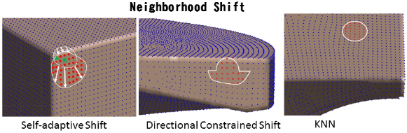
Junjie Cao, He Chen, Jie Zhang*, Yujiao Li, Xiuping Liu, Changqing Zou. Normal Estimation via Shifted Neighborhood for point cloud. Journal of Computational and Applied Mathematics, 2018, 329, 57-67. (SCI, IF: 1.328; JCR2; Top)
-
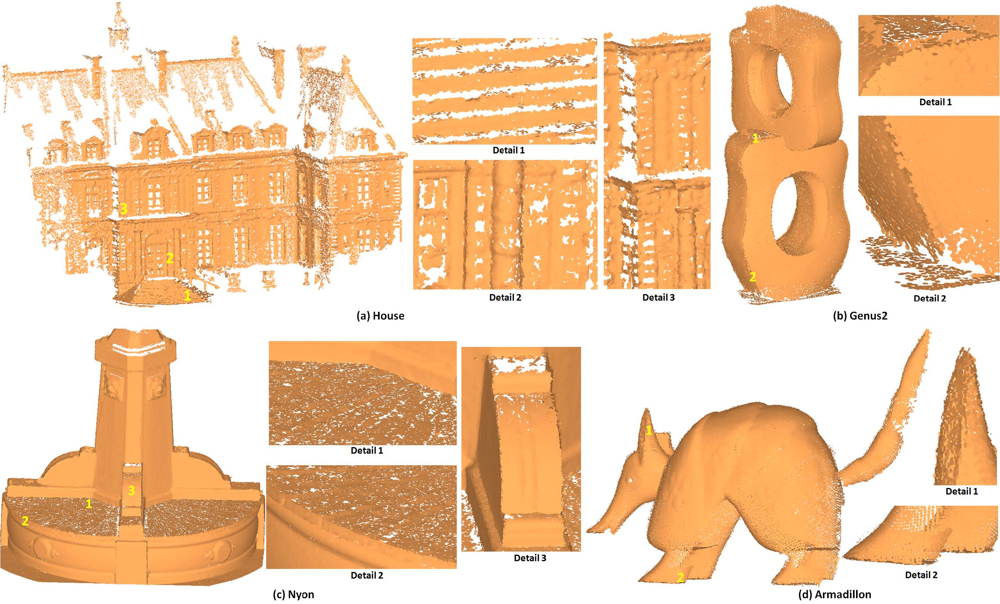
Jie Zhang, Junjie Cao (co-first authors), Xiuping Liu*, He Chen, Bo Li, Ligang Liu. Multi-Normal Estimation via Pair Consistency Voting. IEEE Transactions on Visualization and Computer Graphics, 2018, online. (CCF A, JCR2, Top)
-
Bo Li, Risheng Liu, Junjie Cao*, Jie Zhang, Yu-Kun Lai, Xiuping Liu. Online Low-Rank Representation Learning for Joint Multi-subspace Recovery and Clustering. IEEE Transactions on Image Processing, 2018, 27(1), 335-348. (SCI, IF: 3.625; JCR 2, CCF A, Top)
-
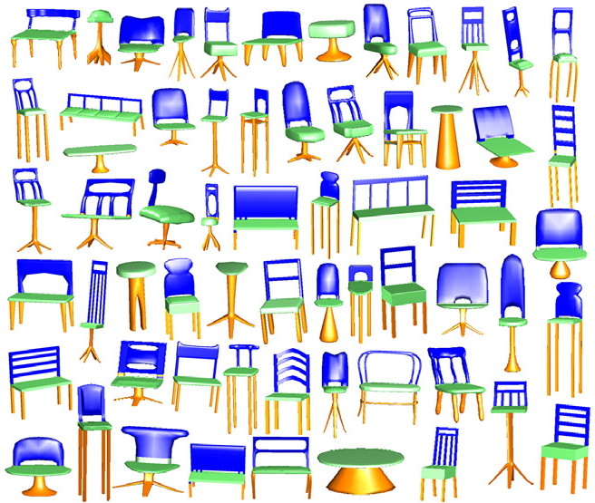
Jun Zhou, Xiuping Liu*, Junjie Cao, Weiming Wang, Baocai Yin. Deep Mesh Labeling via Learned Semantic Boundary Guidance. Computer-Aided Design, 2018, 101, 72-81. (SCI, CCF B, JCR2，Top)
-
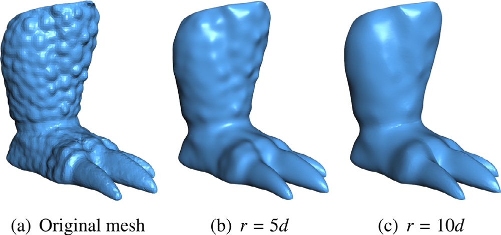
Bin Liu, Junjie Cao, Weiming Wang, Ning Ma, Bo Li, Ligang Liu, Xiuping Liu*. Propagated Mesh Normal Filtering. Computers & Graphics, 74 (2018) 119–125. (SCI; CCF C; JCR 4)
2017
-

Junjie Cao, Jie Zhang, Zhijie Wen*, Nannan Wang, Xiuping Liu*. "Fabric Defect Inspection using Prior Knowledge Guided Least Squares Regression", Multimedia Tools and Applications, 2017, 76(3), 4141-4157. [Project page]. (SCI, IF: 1.346) (CCF C)
-
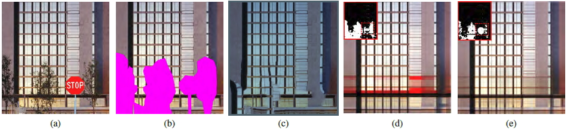
Junjie Cao, Jun Zhou, Xiuping Liu*, Weiming Wang, Pingping Tao, Jun Wang. Low-rank image completion with entropy features. Machine Vision and Applications, 2017, 28(1), 129-139. (SCI, IF: 1.272) (CCF C)
2016
-
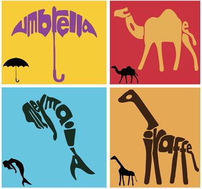
Changqing Zou*, Junjie Cao*, Warunika Ranaweera, Ibraheem Alhashim, Ping Tan, Alla Sheffer, Hao Zhang, "Legible Compact Calligrams", ACM Trans. on Graphics (Special Issue of SIGGRAPH), Vol. 35, No. 4, Article 122, 2016. [PDF | bibtex] (SCI, IF: 3.361) (CCF A)
-
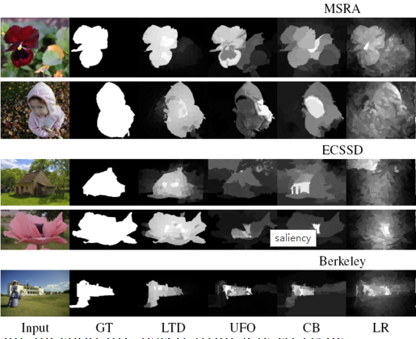
Risheng Liu*, Guangyu Zhong, Junjie Cao, Zhouchen Lin, Shiguang Shan, Zhongxuan Luo, "Learning to Diffuse: A New Perspective to Design PDEs for Visual Analysis", IEEE Transactions on Pattern Analysis and Machine Intelligence, 38(12), 2457-2471, 2016. [Project page ]. (SCI, IF: 5.694) (CCF A)
-
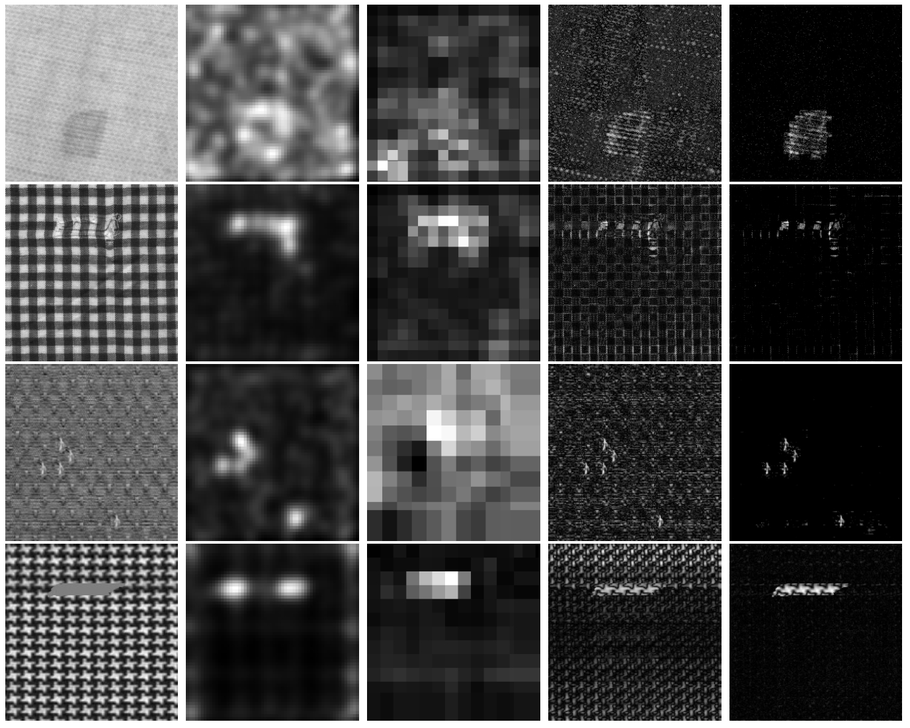
Junjie Cao, Nannan Wang, Jie Zhang, Bo Li, Zhijie Wen*, Xiuping Liu*. "Detection of varied defects in diverse fabric images via modified RPCA with noise term and defect prior", International Journal of Clothing Science and Technology, 2016, 28(4), 516-529. (SCI, IF: 0.458)
-
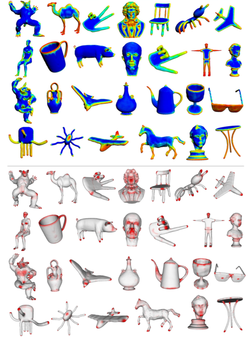
Xiuping Liu, Pingping Tao, Junjie Cao*, He Chen, Changqing Zou. "Mesh saliency detection via double absorbing Markov chain in feature space", The Visual Computer, 2016, 32(9), 1121-1132. (SCI, IF: 0.957) (CCF C)
-
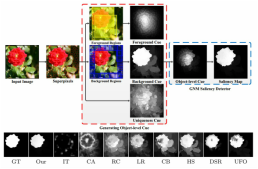
Guangyu Zhong, Risheng Liu, Junjie Cao*, Zhixun Su. "A generalized nonlocal mean framework with object-level cues for saliency detection", The Visual Computer, 32(5), 611-623, 2016. [Project page] (SCI, IF: 0.957) (CCF C)
-
Yusong Liu, Zhixun Su*, Junjie Cao, Hui Wang. "Harmonic mean normalized Laplace–Beltrami spectral descriptor", The Visual Computer, 32(5), 611-623, 2016. (SCI, IF: 0.957) (CCF C)
2015
-
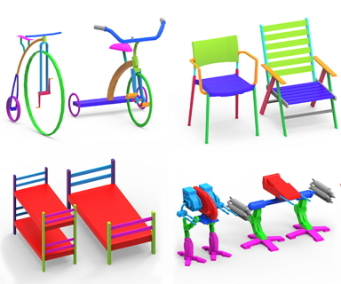
Ibraheem Alhashim, Kai Xu, Yixin Zhuang, Junjie Cao, Patricio Simari, and Hao Zhang, "Deformation-Driven Topology-Varying 3D Shape Correspondence", ACM Trans. on Graphics (Special Issue of SIGGRAPH Asia), Vol. 34, No. 6, Article 236, 2015. [PDF (20 MB) | PDF reduced (12 MB) | Project page | bibtex]. (SCI, IF: 3.361) (CCF A)
-
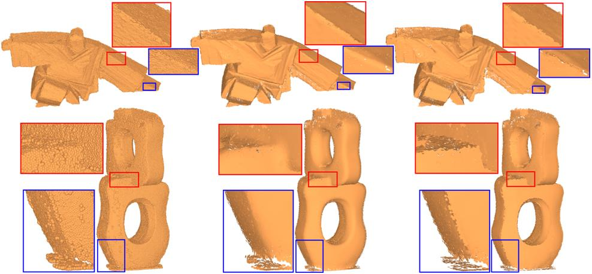
Xiuping Liu, Jie Zhang, Junjie Cao*, Bo Li, Ligang Liu. "Quality Point Cloud Normal Estimation by Guided Least Squares Representation", Computers & Graphics (Special Issue of SMI 2014), 2015, 46, 106-116. (SCI, IF: 1.029) (CCF C)
-
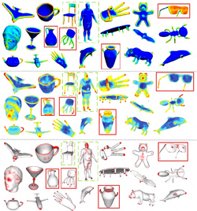
Pingping Tao, Junjie Cao*, Shuhua Li, Xiuping Liu, Ligang Liu. "Mesh Saliency via Ranking Unsalient Patches in a Descriptor Space", Computers & Graphics (Special Issue of SMI 2014), 2015, 46, 264-274. (SCI, IF: 1.029) (CCF C)
-
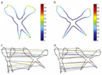
Zhiyang Li, Wenyu Qu*, Junjie Cao, Heng Qi, Milos Stojmenovic. "ECDS: An effective shape signature using electrical charge distribution on the shape", Pattern Recognition, 2015, 48(2), 402-410. (SCI, IF:2.584) (CCF B)
-
Risheng Liu*, Guangyu Zhong, Junjie Cao, Zhixun Su. "Diffuse Visual Attention for Saliency Detection", ournal of Electronic Imaging, 2015, 24(1), 13-23. (IF=0.85, SCI)
2014
-
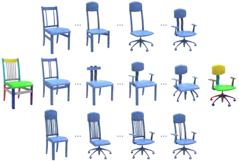
Ibraheem Alhashim, Honghua Li, Kai Xu, Junjie Cao, Rui Ma, and Hao Zhang, "Topology-Varying 3D Shape Creation via Structural Blending", ACM Trans. on Graphics (Special Issue of SIGGRAPH), Vol. 33, No. 4, Article 158, 2014. [Project page | PDF | bibtex]. (SCI, IF: 3.361) (CCF A)
-

Risheng Liu*, Junjie Cao, Zhouchen Lin, Shiguang Shan. "Adaptive Partial Differential Equation Learning for Visual Saliency Detection", IEEE International Conference on Computer Vision and Pattern Recognition (CVPR), 3866-3873, 2014. (Oral, Accept rate: 5.75%) (CCF A) [PDF | Project page].
-
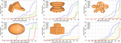
Jian Liu, Junjie Cao*, Xiuping Liu, Jun Wang, XiaoChao Wang, Xiquan Shi. "Mendable consistent orientation of point clouds", Computer-Aided Design, 2014, 55: 26-36. [ Project page] (SCI, IF:1.264) (CCF B)
-
Zhijie Wen*, Junjie Cao, Xiuping Liu, Shihui Ying. "Fabric defects detection using adaptive wavelets", International Journal of Clothing Science and Technology, 2014, 26(3): 202 - 211. (SCI, IF: 0.458)
2013
-
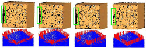
Jie Zhang, Junjie Cao*, Xiuping Liu, Jun Wang, Jian Liu, Xiquan Shi. "Point cloud normal estimation via low-rank subspace clustering", Computer & Graphics (Special issue of SMI), 2013, 37(6): 697-706. [ Project page] (SCI, IF: 1.029) (CCF C)
-
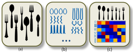
Honghua Li, Hao Zhang, Yanzhen Wang, Junjie Cao, Ariel Shamir, Daniel Cohen-Or. "Curve Style Analysis in a Set of Shapes", Computer Graphics Forum, 2013, 32(6), 77-88. (SCI, IF:1.638) (CCF B)
-

Jun Wang, Zeyun Yu, Weidong Zhu, Junjie Cao. "Feature-Preserving Surface Reconstruction from Unoriented, Noisy Point Data", Computer Graphics Forum, 2013, 32(1), 164-176. (SCI, IF:1.638) (CCF B)
-
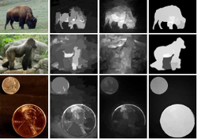
Zhenzhen Zhang, Junjie Cao*, Guangyu Zhong, Wangyi Liu, Zhixun Su. "Object Level Image Saliency by Hierarchical Segmentation", ICIP 2013. (CCF C)
2012
-
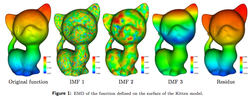
Hui Wang, Zhixun Zu, Junjie Cao, Ye Wang, and Hao Zhang. "Empirical Mode Decomposition on Surfaces", Graphical Models (Special Issue of GMP), 2012, 74(4): 173–183. (SCI)
-
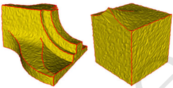
Xiaochao Wang, Junjie Cao, Xiuping Liu, Baojun Li, Xiquan Shi, Yizhen Sun. "Feature detection on triangular meshes via neighbor supporting", Journal of Zhejiang University-SCIENCE C (Computers & Electronics), 2012, 13(6), 440-451. (SCI)
2011
-
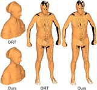
Junjie Cao*, Ying He, Zhiyang Li, Xiuping Liu, Zhixun Su. "Orienting Raw Point Sets by Global Contraction and Visibility Voting", Computer & Graphics (Special Issue of SMI 2011), 2011. [Project page] (SCI, IF: 1.029) (CCF C)
-
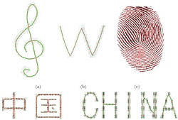
Yuandi Zhao, Junjie Cao, Zhixun Su, Zhiyang Li. "Efficient Reconstruction of Non-simple Curves", ournal of Zhejiang University - SCIENCE C, 2011. (SCI)
2010
-
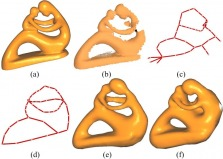
Junjie Cao, Andrea Tagliasacchi, Matt Olson Hao Zhang, and Zhixun Su. "Point Cloud Skeletons via Laplacian-Based Contraction", Proc. of IEEE Shape Modeling International, 187-19, 2010. [PDF | Project page | bibtex]. (Cited by 103)
-
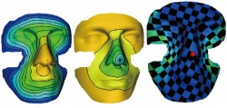
Junjie Cao, Zhixun Su, Xiuping Liu, Haichuan Bi. "Measured Boundary Parameterization Based on Poisson Equation", ournal of Zhejiang University - SCIENCE C, 11(3), 187-198, 2010. (SCI)
2009
- ...